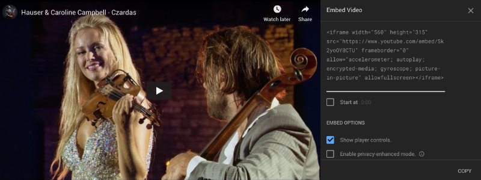

Youtube: HTML media

Afbeeldingen
Inhoud of design?
Let op! Niet alle afbeeldingen van webpagina's worden in de HTML gecodeerd. Sommige worden latern met CSS toegevoegd (zie later). Kort gezegd: design hoort thuis in CSS, inhoud hoort thuis in HTML. Vuistregels:
-
deze grafische effecten kunnen zuiver met CSS, zonder afbeeldingen:
- kaders
- achtergrondkleuren
- gradiënten
- schaduw
- ...
-
deze afbeeldingen zijn design, en horen dus niet in de HTML maar in de CSS:
- grafische elementen
- achtergrondfoto's
- ...
-
deze afbeeldingen zijn inhoud, en horen dus wel in de HTML:
- foto's als illustratie bij een artikel, gallerij, carousel...
- logo's
- reclame
- banners
- thumbnails
- ...
probeer je voor te stellen hoe een pagina er zou uitzien zonder design — afbeeldingen die blijven, codeer je in HTML, de andere niet.
Een voorbeeld (klik om te vergroten):


Bestandsformaten
Volgende formaten zijn gangbaar voor het web:
| type | lossless | lossy | transparantie | animaties | compressie |
|---|---|---|---|---|---|
| .jpg/.jpeg Joint Pictures Expert Group |
V | zeer goede compressie voor foto's; instelbare compressiefactor | |||
| .gif Graphics Image File |
V | V (*) | V |
goede compressie voor vlakken en lijnen; slechts 256 kleuren (*) transparatie enkel 0 of 1 (dus geen echt alfakanaal) |
|
| .png Portable Network Graphics |
V | V | zeer goede compressie voor vlakken en lijnen | ||
| .svg Scalable Vector Graphics |
V | V | V | vectorieel: onbeperkt schaalbaar zonder kwaliteitsverlies, ideaal voor iconen en logo's; kan Javascript bevatten, dus mogelijke veiligheidsrisico's | |
| .webp Web Picture |
V | V | V | V | uitstekende compressie voor alle soorten afbeeldingen nieuw formaat; ondersteuning door grafische programma's is beperkt |
- beperk bestandsgrootte! herschaal / comprimeer / converteer met tools als squoosh.app
Keuze formaat
Welk formaat is nu het meest geschikte? Bestaat je afbeelding vooral uit vlakken en lijnen (denk aan iconen en logo's):
- SVG is het beste voor schaalbare afbeeldingen, al is het niet eenvoudig te bewerken en heb je gespecialiseerde programma's als Adobe Illustrator nodig om het te bewerken. Ook kan SVG Javascript bevatten, waardoor sommigen het als een veiligheidsrisico zien (Wordpress bv.).
- WebP is een recent formaat met uitstekende lossless compressie en mogelijkheid tot transparantie en animaties, al is de ondersteuning door grafische programma's beperkt (denk ook aan foto-apps enz...)
- PNG kan je gebruiken als transparantie belangrijk is en WebP geen optie is
- GIF kan je gebruiken als je animatie wil en WebP geen optie is
Bestaat je afbeelding vooral uit graduele kleurovergangen (denk aan foto's):
- WebP is een recent formaat met uitstekende lossy compressie en mogelijkheid tot transparantie en animaties, al is de ondersteuning door grafische programma's beperkt (denk ook aan foto-apps enz...)
- JPG voldoet nog steeds met een prima compressie zolang je geen transparantie of animaties wil, en is het makkelijkste om mee te werken
SVG formaat
SVG (Scalable Vector Graphics) is een buitenbeentje: het bevat geen pixel informatie, maar code die o.a. lijnen, curves, vlakken enz... beschrijft. Dit noemt men vectorieel. Daardoor is het eindeloos schaalbaar zonder kwaliteitsverlies, ideaal voor bv. logo's. Codevoorbeeld:
<svg xmlns="http://www.w3.org/2000/svg" xmlns:xlink="http://www.w3.org/1999/xlink" viewBox="0 0 195 82">
<title>SVG logo combined with the W3C logo, set horizontally</title>
<desc>The logo combines three entities displayed horizontally: the W3C logo with the text 'W3C'; the drawing of a flower or star shape with eight arms; and the text 'SVG'. These three entities are set horizontally.</desc>
<metadata>
<rdf:RDF xmlns:rdf="http://www.w3.org/1999/02/22-rdf-syntax-ns#" xmlns:rdfs="http://www.w3.org/2000/01/rdf-schema#" xmlns:cc="http://creativecommons.org/ns#" xmlns:xhtml="http://www.w3.org/1999/xhtml/vocab#" xmlns:dc="http://purl.org/dc/elements/1.1/">
<cc:Work rdf:about="">
<dc:title>SVG logo combined with the W3C logo</dc:title>
<dc:format>image/svg+xml</dc:format>
<rdfs:seeAlso rdf:resource="http://www.w3.org/2007/10/sw-logos.html"/>
<dc:date>2007-11-01</dc:date>
<xhtml:license rdf:resource="http://www.w3.org/Consortium/Legal/2002/copyright-documents-20021231"/>
<cc:morePermissions rdf:resource="http://www.w3.org/2007/10/sw-logos.html#LogoWithW3C"/>
<cc:attributionURL rdf:reource="http://www.w3.org/2001/sw/"/>
<dc:description>The logo combines three entities displayed horizontally: the W3C logo with the text 'W3C'; the drawing of a flower or star shape with eight arms; and the text 'SVG'. These three entities are set horizontally.
</dc:description>
</cc:Work>
</rdf:RDF>
</metadata>
<text x="0" y="75" font-size="83" fill-opacity="0" font-family="Trebuchet" letter-spacing="-12">W3C</text>
<text x="180" y="75" font-size="83" fill-opacity="0" font-family="Trebuchet" font-weight="bold">SVG</text>
<defs>
<g id="SVG" fill="#005A9C">
<path id="S" d="M 5.482,31.319 C2.163,28.001 0.109,23.419 0.109,18.358 C0.109,8.232 8.322,0.024 18.443,0.024 C28.569,0.024 36.782,8.232 36.782,18.358 L26.042,18.358 C26.042,14.164 22.638,10.765 18.443,10.765 C14.249,10.765 10.850,14.164 10.850,18.358 C10.850,20.453 11.701,22.351 13.070,23.721 L13.075,23.721 C14.450,25.101 15.595,25.500 18.443,25.952 L18.443,25.952 C23.509,26.479 28.091,28.006 31.409,31.324 L31.409,31.324 C34.728,34.643 36.782,39.225 36.782,44.286 C36.782,54.412 28.569,62.625 18.443,62.625 C8.322,62.625 0.109,54.412 0.109,44.286 L10.850,44.286 C10.850,48.480 14.249,51.884 18.443,51.884 C22.638,51.884 26.042,48.480 26.042,44.286 C26.042,42.191 25.191,40.298 23.821,38.923 L23.816,38.923 C22.441,37.548 20.468,37.074 18.443,36.697 L18.443,36.692 C13.533,35.939 8.800,34.638 5.482,31.319 L5.482,31.319 L5.482,31.319 Z"/>
<path id="V" d="M 73.452,0.024 L60.482,62.625 L49.742,62.625 L36.782,0.024 L47.522,0.024 L55.122,36.687 L62.712,0.024 L73.452,0.024 Z"/>
<path id="G" d="M 91.792,25.952 L110.126,25.952 L110.126,44.286 L110.131,44.286 C110.131,54.413 101.918,62.626 91.792,62.626 C81.665,62.626 73.458,54.413 73.458,44.286 L73.458,44.286 L73.458,18.359 L73.453,18.359 C73.453,8.233 81.665,0.025 91.792,0.025 C101.913,0.025 110.126,8.233 110.126,18.359 L99.385,18.359 C99.385,14.169 95.981,10.765 91.792,10.765 C87.597,10.765 84.198,14.169 84.198,18.359 L84.198,44.286 L84.198,44.286 C84.198,48.481 87.597,51.880 91.792,51.880 C95.981,51.880 99.380,48.481 99.385,44.291 L99.385,44.286 L99.385,36.698 L91.792,36.698 L91.792,25.952 L91.792,25.952 Z"/>
</g>
</defs>
<g shape-rendering="geometricPrecision" text-rendering="geometricPrecision" image-rendering="optimizeQuality">
<g>
<g id="logo" transform="scale(0.24) translate(0, 35)">
<g stroke-width="38.0086" stroke="#000">
<g id="svgstar" transform="translate(150, 150)">
<path id="svgbar" fill="#EDA921" d="M-84.1487,-15.8513 a22.4171,22.4171 0 1 0 0,31.7026 h168.2974 a22.4171,22.4171 0 1 0 0,-31.7026 Z"/>
<use xlink:href="#svgbar" transform="rotate(45)"/>
<use xlink:href="#svgbar" transform="rotate(90)"/>
<use xlink:href="#svgbar" transform="rotate(135)"/>
</g>
</g>
<use xlink:href="#svgstar"/>
</g>
<g id="SVG-label">
<use xlink:href="#SVG" transform="scale(1.08) translate(65,10)"/>
</g>
</g>
</g>
</svg>- SVG kan ook Javascript bevatten, wat interactie met de afbeelding en complexe bewerkingen als filters mogelijk maakt, zie dit filter demo.
- meer voorbeelden: tiger, trazy text
{kind=link}
{kind=link}
<img>
De standaardwijze om een afbeelding toe te voegen, is met de HTML <img> tag:
<img src="img/05_media/schaakstukken.jpg"
alt="Staunton schaakstukken, 1852 Morphy serie"><!-- alt is verplicht! -->
- dit kan met alle afbeeldingsformaten, niet enkel jpg
- het
altattribuut is verplicht voor visueel beperkten, maar ook om zoekmachines te helpen indexeren - geef een relevante beschrijving, dus niet "IMG_20190605_175721.jpg" e.d.
<figure> en <figcaption>
Als je een afbeelding met een bijschrift wil groeperen, kan je ook <figure> en <figcaption> gebruiken
<figure>
<img src="img/05_media/schaakstukken.jpg"
alt="Staunton schaakstukken, 1852 Morphy serie">
<figcaption>© Rogier van der Linde, 2020</figcaption>
</figure>
Het kan ook meerdere afbeeldingen bevatten (denk aan een kleine fotogallerij):
<figure>
<img src="img/05_media/horseA.jpg" alt="paard tekenen stap 1">
<img src="img/05_media/horseB.jpg" alt="paard tekenen stap 2">
<img src="img/05_media/horseC.jpg" alt="paard tekenen stap 3">
<figcaption>hoe teken ik een paard</figcaption>
</figure>
Een figure kan in feite alles bevatten dat buiten de hoofdtekst staat: een grafiek, een video, een codefragment...
Letterlijk door het W3C:
The figure element represents a unit of content, optionally with a caption, that is self-contained, that is typically referenced as a single unit from the main flow of the document, and that can be moved away from the main flow of the document without affecting the document’s meaning.
<picture>
Je kan <picture> gebruiken als je meerdere versies wil voorzien voor verschillende media. De browser zal de beste match kiezen.
<picture>
<source media="(min-width: 800px)" srcset="img/pink_flowers.jpg">
<source media="(min-width: 600px)" srcset="img/white_flower.jpg">
<img src="img/orange_flowers.jpg" alt="Flowers">
</picture>- bevat één of meer <source> elementen en een standaard <img> element
- je kan differentiëren naargelang schermbreedte, oriëntatie, device type...
Embedding
Youtube videos
Het gebruik <audio> and <video> in HTML heeft twee grote problemen:
- audio- en (vooral) videobestanden zijn over het algemeen veel te groot om zelf te hosten
- er zijn veel formaten om uit de kiezen (.mp4, .mov, ., .webm...) maar weinigen zijn ondersteund door alle browsers
Het alternatief is simpel: upload je audio of video op diensten als Youtube of Soundcloud, en kopieer de <iframe> embed code naar jouw HTML:
Google maps
Ook Google maps kan je embedden op je pagina. Klik "delen" en kopieer de <iframe> embed code naar jouw HTML:

Andere
Veel andere sites bieden eveneens de optie om hun code te embedden, zoals Google Trends: